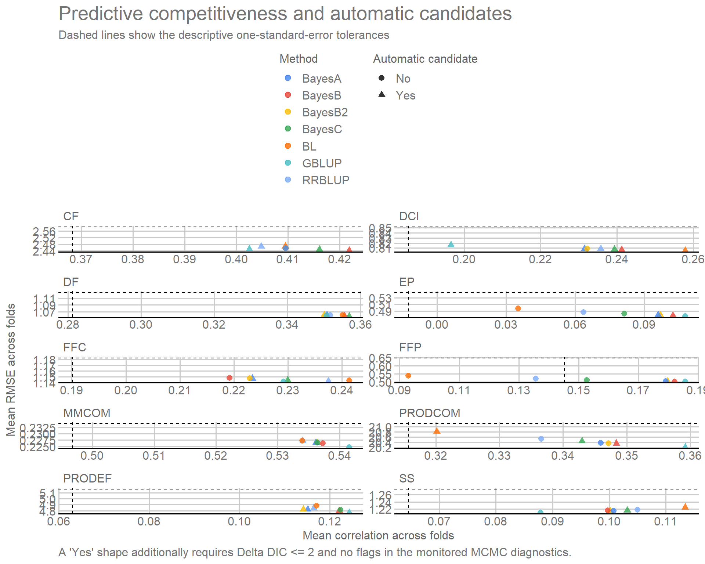
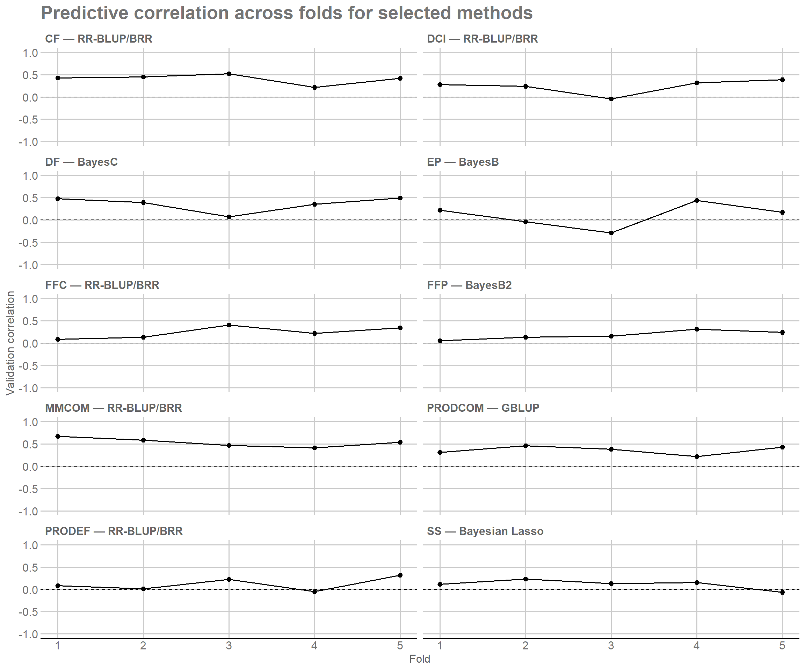
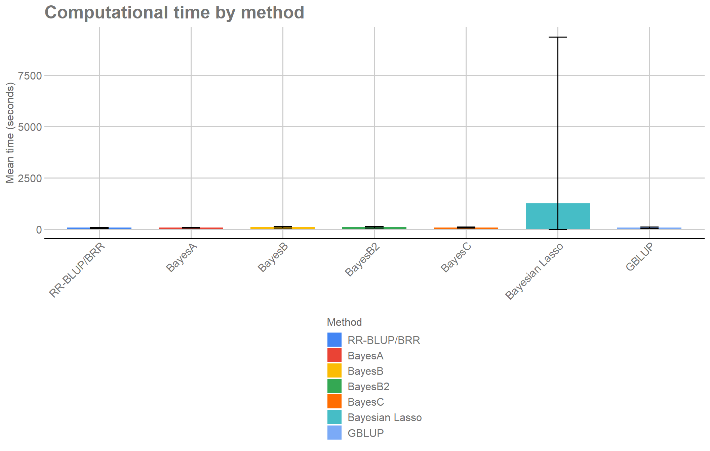

1. Objective
Using the predictions, metrics, and diagnostics obtained in Module 03, this final analytical module moves continuously from evidence to decision and interpretation.
Instead of deriving all quantities first and presenting them later on a separate page, each result is shown and interpreted immediately after it is calculated. The analytical sequence is:
OOF predictive performance → DIC support → trait-specific method selection → diagnostics of the selected methods → OOF genomic values → exploratory rankings → recurrence across traits → final interpretation.
The module derives pooled OOF predictive performance, DIC-derived relative support, the selected method for each trait, fold stability, computational time, the RR-BLUP/BRR marker-based heritability analogue, OOF genomic values, oriented rankings, proportional selection, recurrence across traits, and associations among cross-fitted genomic scores.
The breeding direction is defined before ranking: increase MMCOM, PRODCOM, CF, DF, EP, FFC, FFP, and SS; decrease PRODEF and DCI. Rankings remain exploratory and use cross-fitted OOF genomic values rather than final breeding values from a full-data refit.
2. Packages and model-fitting results
2.1 Packages used
The packages used here have distinct roles:
dplyr: grouping, joining, ordering, and summarizing result tables;tidyr: reshaping tables between long and wide formats;ggplot2: building the graphical diagnostic of the selection rule;ggthemes: applying the GDocs theme and color scale;knitr: formatting tables in R Markdown documents;here: building project-relative file paths.
library(dplyr) # Group, join, and summarize tables.
library(tidyr) # Reshape data between long and wide formats.
library(ggplot2) # Build diagnostic figures.
library(ggthemes) # Apply the GDocs theme and color scale.
library(knitr) # Format tables in R Markdown documents.
library(here) # Build project-relative paths.2.2 Input objects
The module uses two consolidated objects:
matrices_object.rds, which supplies phenotypes, metadata,
and definitions from Module 02, and models_object.rds,
which supplies fold-level metrics, OOF predictions, and MCMC diagnostics
from Module 03. During derivation, no output directory is created;
output/results/m04/ is prepared only in Section 13,
immediately before the results are persisted.
matrices_object <- readRDS(
here("output", "matrices", "matrices_object.rds")
)
models_object <- readRDS(
here("output", "models", "models_object.rds")
)
metrics <- models_object$metrics_by_fold
predictions <- models_object$predictions
convergence <- models_object$convergence_diagnostics
traits <- colnames(matrices_object$phenotypes)
methods <- models_object$settings$methods2.3 Presentation labels and graphical standard
The calculations retain the method codes stored in the analytical objects. Readable labels and the graphical theme below affect presentation only; they do not modify any scientific quantity.
method_labels <- c(
RRBLUP = "RR-BLUP/BRR",
BayesA = "BayesA",
BayesB = "BayesB",
BayesB2 = "BayesB2",
BayesC = "BayesC",
BL = "Bayesian Lasso",
GBLUP = "GBLUP"
)
selection_objective_labels <- c(
increase = "Increase",
decrease = "Decrease"
)
project_theme <- theme_gdocs() +
theme(
legend.position = "bottom",
strip.text = element_text(face = "bold"),
plot.title = element_text(face = "bold")
)3. OOF predictive performance
3.1 Scope of OOF evaluation
The OOF estimates inherit the family-stratified design of Modules 02 and 03. They quantify prediction within the represented breeding population and do not estimate generalization to entirely new families.
The main metrics are recalculated using the 150 out-of-fold predictions for each trait × method combination. Each individual contributes one OOF prediction for every method.
3.2 Pooled performance and variation across folds
For each trait × method combination, correlation, RMSE, MAE, bias, and slope are calculated from the 150 OOF predictions. The two-sided Pearson-correlation p-value is retained only as a nominal descriptive measure because training sets overlap across folds.
# Combine OOF predictions and compute aggregate predictive metrics by trait and method.
pooled_metrics <- predictions |>
group_by(Trait, Method) |>
summarise(
N = n(),
r = cor(Observed, Predicted),
RMSE = sqrt(mean((Observed - Predicted)^2)),
MAE = mean(abs(Observed - Predicted)),
Bias = mean(Predicted - Observed),
Slope = cov(Observed, Predicted) / var(Predicted),
.groups = "drop"
) |>
mutate(
t_value = r * sqrt((N - 2) / (1 - r^2)),
p_value = 2 * pt(abs(t_value), df = N - 2, lower.tail = FALSE)
) |>
select(-t_value)
# Summarize the results in `fold_summary`.
fold_summary <- metrics |>
group_by(Trait, Method) |>
summarise(
Mean_DIC = mean(DIC),
SD_DIC = sd(DIC),
Mean_fold_r = mean(Correlation),
SD_fold_r = sd(Correlation),
Mean_fold_RMSE = mean(RMSE),
SD_fold_RMSE = sd(RMSE),
Mean_fold_MAE = mean(MAE),
SD_fold_MAE = sd(MAE),
.groups = "drop"
)There are two summary scales in this section.
pooled_metrics combines the 150 OOF predictions and
provides the global performance of each trait × method combination; this
pooled correlation is the primary reference for ranking predictive
winners. fold_summary preserves variation across the five
folds and is used later to assess stability and construct the
descriptive one-standard-error tolerances.
Pearson-correlation p-values are retained as nominal descriptive measures because training sets overlap across folds. They are reported for context and are not used to determine eligibility for genomic selection.
4. DIC and relative support for the methods
4.1 DIC-derived relative support
Following the logic used in the reference study (Silva et al. 2021), the difference from the smallest mean DIC within each trait is converted into relative weights:
\[ \Delta_j=\overline{DIC}_j-\min_k(\overline{DIC}_k), \]
\[ Wprob_j=\frac{\exp(-\Delta_j/2)}{\sum_k\exp(-\Delta_k/2)}, \qquad ER_j=\frac{Wprob_{\max}}{Wprob_j}. \]
Wprob is used here as a DIC-derived relative-support
weight. It is not interpreted as a calibrated posterior probability of a
model.
The implementation uses log-weights before normalization to improve
numerical stability without changing relative ratios. Wprob
sums to 1 within each trait, and ER expresses support
relative to the method with the largest weight.
# Combine fold performance and DIC to build the quantities used for model comparison.
model_comparison <- pooled_metrics |>
left_join(fold_summary, by = c("Trait", "Method")) |>
group_by(Trait) |>
mutate(
Delta_DIC = Mean_DIC - min(Mean_DIC),
log_weight = -0.5 * Delta_DIC,
stable_weight = exp(log_weight - max(log_weight)),
Wprob = stable_weight / sum(stable_weight),
# Compute the evidence ratio relative to the method with the largest Wprob in each trait.
ER = max(Wprob) / Wprob
) |>
ungroup() |>
select(
Trait, Method, Mean_DIC, SD_DIC, Delta_DIC, Wprob, ER,
N, r, p_value, RMSE, MAE, Bias, Slope,
Mean_fold_r, SD_fold_r, Mean_fold_RMSE, SD_fold_RMSE,
Mean_fold_MAE, SD_fold_MAE
) |>
arrange(match(Trait, traits), Delta_DIC)4.2 Diagnostic of Wprob normalization
The normalization can be inspected directly within each trait. The
seven weights should sum numerically to 1, while the best DIC-supported
method has ER = 1. This table is only a visible diagnostic
of the transformation defined above.
model_comparison |>
group_by(Trait) |>
summarise(
Sum_Wprob = sum(Wprob),
Maximum_Wprob = max(Wprob),
Minimum_ER = min(ER),
.groups = "drop"
) |>
format_table(
digits = 8,
caption = "Diagnostic of DIC-derived weight normalization",
col.names = c(
"Trait", "Sum of Wprob",
"Largest Wprob", "Smallest ER"
)
)| Trait | Sum of Wprob | Largest Wprob | Smallest ER |
|---|---|---|---|
| CF | 1 | 0.2195560 | 1 |
| DCI | 1 | 0.2228662 | 1 |
| DF | 1 | 0.1954378 | 1 |
| EP | 1 | 0.2860897 | 1 |
| FFC | 1 | 0.1967765 | 1 |
| FFP | 1 | 0.2848488 | 1 |
| MMCOM | 1 | 0.2313583 | 1 |
| PRODCOM | 1 | 0.2274634 | 1 |
| PRODEF | 1 | 0.2146735 | 1 |
| SS | 1 | 0.1839569 | 1 |
4.3 Relationship between Bayesian fit and predictive performance
model_comparison combines OOF performance and
DIC-derived relative support for every trait and method. DIC quantities
are comparable only within the same trait and do not replace predictive
evidence.
In the joint comparison, methods with similar DIC can have different
OOF performance, and the method with the largest Wprob need
not have the largest predictive correlation. Bayesian fit and predictive
ability therefore remain complementary rather than interchangeable
criteria.
4.4 Visual comparison of OOF predictive performance
The pooled OOF correlation is the primary visual reference for predictive comparison. The horizontal line at zero separates positive from nonpositive association. Bars are point estimates, not uncertainty intervals.
# Order methods and build the OOF-correlation figure by trait.
predictive_plot <- model_comparison |>
mutate(Method = factor(Method, levels = methods)) |>
ggplot(aes(x = Method, y = r, fill = Method)) +
geom_hline(yintercept = 0, linetype = 2, linewidth = 0.4) +
geom_col(width = 0.75) +
facet_wrap(~ Trait, scales = "fixed", ncol = 2) +
scale_fill_gdocs(
breaks = methods,
labels = method_labels
) +
scale_x_discrete(labels = method_labels) +
labs(
x = NULL,
y = "OOF correlation",
fill = "Method",
title = "Predictive ability of the seven methods"
) +
project_theme +
theme(axis.text.x = element_text(angle = 45, hjust = 1))
predictive_plot
Predictive magnitude and method ordering vary among traits. The workflow therefore does not define one globally superior method; selection remains trait-specific and continues with complementary DIC and diagnostic evidence.
4.5 Joint predictive and DIC comparison
The table below places the complementary evidence sources side by side. DIC-derived quantities are compared only within the same trait, while OOF correlation retains its predictive interpretation. The nominal p-value is shown for context and is not a ranking-eligibility criterion.
# DISPLAY-ONLY START
model_comparison_display <- model_comparison |>
mutate(Method_label = unname(method_labels[Method])) |>
transmute(
Trait,
Method,
Method_label,
DIC = sprintf("%.2f", Mean_DIC),
Delta_DIC = sprintf("%.2f", Delta_DIC),
Wprob = sprintf("%.3f", Wprob),
ER = sprintf("%.3f", ER),
r = sprintf("%.3f", r),
p_value = if_else(
p_value < 0.001,
"<0.001",
sprintf("%.3f", p_value)
)
) |>
arrange(match(Trait, traits), match(Method, methods))
format_table(
model_comparison_display |>
select(Trait, Method_label, DIC, Delta_DIC, Wprob, ER, r, p_value),
caption = "Comparison of the seven methods by trait",
col.names = c("Trait", "Method", "DIC", "Delta DIC", "Wprob", "ER", "r", "p-value")
)| Trait | Method | DIC | Delta DIC | Wprob | ER | r | p-value |
|---|---|---|---|---|---|---|---|
| MMCOM | RR-BLUP/BRR | -19.28 | 0.48 | 0.182 | 1.270 | 0.526 | <0.001 |
| MMCOM | BayesA | -18.40 | 1.36 | 0.117 | 1.972 | 0.528 | <0.001 |
| MMCOM | BayesB | -17.65 | 2.11 | 0.081 | 2.866 | 0.530 | <0.001 |
| MMCOM | BayesB2 | -18.38 | 1.38 | 0.116 | 1.991 | 0.529 | <0.001 |
| MMCOM | BayesC | -18.47 | 1.28 | 0.122 | 1.899 | 0.529 | <0.001 |
| MMCOM | Bayesian Lasso | -19.75 | 0.00 | 0.231 | 1.000 | 0.526 | <0.001 |
| MMCOM | GBLUP | -18.89 | 0.86 | 0.150 | 1.539 | 0.535 | <0.001 |
| PRODCOM | RR-BLUP/BRR | 1069.69 | 0.86 | 0.148 | 1.536 | 0.329 | <0.001 |
| PRODCOM | BayesA | 1070.03 | 1.20 | 0.125 | 1.823 | 0.336 | <0.001 |
| PRODCOM | BayesB | 1070.29 | 1.46 | 0.110 | 2.073 | 0.337 | <0.001 |
| PRODCOM | BayesB2 | 1070.05 | 1.22 | 0.124 | 1.839 | 0.338 | <0.001 |
| PRODCOM | BayesC | 1069.83 | 1.00 | 0.138 | 1.647 | 0.333 | <0.001 |
| PRODCOM | Bayesian Lasso | 1069.98 | 1.15 | 0.128 | 1.775 | 0.314 | <0.001 |
| PRODCOM | GBLUP | 1068.83 | 0.00 | 0.227 | 1.000 | 0.347 | <0.001 |
| PRODEF | RR-BLUP/BRR | 714.34 | 0.89 | 0.138 | 1.557 | 0.042 | 0.606 |
| PRODEF | BayesA | 714.21 | 0.76 | 0.147 | 1.465 | 0.038 | 0.641 |
| PRODEF | BayesB | 714.52 | 1.07 | 0.126 | 1.703 | 0.044 | 0.593 |
| PRODEF | BayesB2 | 714.18 | 0.73 | 0.149 | 1.442 | 0.038 | 0.647 |
| PRODEF | BayesC | 714.45 | 0.99 | 0.131 | 1.644 | 0.046 | 0.572 |
| PRODEF | Bayesian Lasso | 715.07 | 1.62 | 0.095 | 2.251 | 0.046 | 0.576 |
| PRODEF | GBLUP | 713.45 | 0.00 | 0.215 | 1.000 | 0.049 | 0.554 |
| CF | RR-BLUP/BRR | 557.47 | 1.23 | 0.119 | 1.850 | 0.386 | <0.001 |
| CF | BayesA | 557.77 | 1.53 | 0.102 | 2.151 | 0.391 | <0.001 |
| CF | BayesB | 556.88 | 0.63 | 0.160 | 1.372 | 0.401 | <0.001 |
| CF | BayesB2 | 557.74 | 1.50 | 0.104 | 2.114 | 0.391 | <0.001 |
| CF | BayesC | 556.62 | 0.37 | 0.182 | 1.205 | 0.397 | <0.001 |
| CF | Bayesian Lasso | 556.24 | 0.00 | 0.220 | 1.000 | 0.389 | <0.001 |
| CF | GBLUP | 557.56 | 1.32 | 0.114 | 1.933 | 0.389 | <0.001 |
| DF | RR-BLUP/BRR | 348.39 | 0.35 | 0.164 | 1.192 | 0.321 | <0.001 |
| DF | BayesA | 349.09 | 1.05 | 0.115 | 1.694 | 0.319 | <0.001 |
| DF | BayesB | 349.39 | 1.35 | 0.099 | 1.967 | 0.324 | <0.001 |
| DF | BayesB2 | 349.08 | 1.05 | 0.116 | 1.687 | 0.318 | <0.001 |
| DF | BayesC | 348.57 | 0.53 | 0.150 | 1.307 | 0.326 | <0.001 |
| DF | Bayesian Lasso | 348.03 | 0.00 | 0.195 | 1.000 | 0.327 | <0.001 |
| DF | GBLUP | 348.43 | 0.39 | 0.160 | 1.218 | 0.316 | <0.001 |
| DCI | RR-BLUP/BRR | 292.92 | 1.03 | 0.133 | 1.673 | 0.200 | 0.014 |
| DCI | BayesA | 293.54 | 1.65 | 0.098 | 2.283 | 0.193 | 0.018 |
| DCI | BayesB | 292.81 | 0.92 | 0.141 | 1.583 | 0.201 | 0.014 |
| DCI | BayesB2 | 293.53 | 1.65 | 0.098 | 2.278 | 0.194 | 0.017 |
| DCI | BayesC | 292.16 | 0.27 | 0.194 | 1.147 | 0.200 | 0.014 |
| DCI | Bayesian Lasso | 291.89 | 0.00 | 0.223 | 1.000 | 0.224 | 0.006 |
| DCI | GBLUP | 293.24 | 1.35 | 0.113 | 1.964 | 0.158 | 0.054 |
| EP | RR-BLUP/BRR | 163.40 | 2.56 | 0.079 | 3.605 | -0.075 | 0.362 |
| EP | BayesA | 161.87 | 1.04 | 0.170 | 1.681 | -0.052 | 0.523 |
| EP | BayesB | 161.94 | 1.10 | 0.165 | 1.734 | -0.046 | 0.577 |
| EP | BayesB2 | 161.86 | 1.03 | 0.171 | 1.670 | -0.052 | 0.528 |
| EP | BayesC | 162.94 | 2.11 | 0.100 | 2.868 | -0.062 | 0.452 |
| EP | Bayesian Lasso | 165.46 | 4.62 | 0.028 | 10.089 | -0.090 | 0.274 |
| EP | GBLUP | 160.84 | 0.00 | 0.286 | 1.000 | -0.038 | 0.645 |
| FFC | RR-BLUP/BRR | 376.66 | 0.79 | 0.133 | 1.481 | 0.210 | 0.010 |
| FFC | BayesA | 376.39 | 0.52 | 0.152 | 1.297 | 0.191 | 0.019 |
| FFC | BayesB | 376.62 | 0.74 | 0.136 | 1.450 | 0.186 | 0.023 |
| FFC | BayesB2 | 376.40 | 0.52 | 0.151 | 1.300 | 0.190 | 0.020 |
| FFC | BayesC | 376.74 | 0.86 | 0.128 | 1.538 | 0.200 | 0.014 |
| FFC | Bayesian Lasso | 377.16 | 1.29 | 0.103 | 1.901 | 0.218 | 0.007 |
| FFC | GBLUP | 375.87 | 0.00 | 0.197 | 1.000 | 0.195 | 0.017 |
| FFP | RR-BLUP/BRR | 198.97 | 3.80 | 0.043 | 6.676 | 0.058 | 0.484 |
| FFP | BayesA | 195.86 | 0.69 | 0.202 | 1.409 | 0.086 | 0.293 |
| FFP | BayesB | 195.99 | 0.81 | 0.190 | 1.501 | 0.089 | 0.280 |
| FFP | BayesB2 | 195.82 | 0.65 | 0.206 | 1.383 | 0.087 | 0.290 |
| FFP | BayesC | 198.06 | 2.89 | 0.067 | 4.240 | 0.069 | 0.399 |
| FFP | Bayesian Lasso | 202.46 | 7.28 | 0.007 | 38.143 | 0.032 | 0.701 |
| FFP | GBLUP | 195.17 | 0.00 | 0.285 | 1.000 | 0.090 | 0.273 |
| SS | RR-BLUP/BRR | 381.93 | 0.45 | 0.147 | 1.254 | 0.085 | 0.302 |
| SS | BayesA | 382.39 | 0.92 | 0.116 | 1.580 | 0.082 | 0.319 |
| SS | BayesB | 382.11 | 0.64 | 0.134 | 1.374 | 0.084 | 0.308 |
| SS | BayesB2 | 382.42 | 0.94 | 0.115 | 1.599 | 0.082 | 0.321 |
| SS | BayesC | 381.74 | 0.26 | 0.161 | 1.140 | 0.085 | 0.302 |
| SS | Bayesian Lasso | 381.48 | 0.00 | 0.184 | 1.000 | 0.095 | 0.248 |
| SS | GBLUP | 381.99 | 0.51 | 0.143 | 1.289 | 0.067 | 0.414 |
# DISPLAY-ONLY END5. Selecting a method for each trait
Selection is trait-specific and hierarchical: predictive evidence, DIC support, and the monitored MCMC diagnostics remain separate rather than being collapsed into a single score.
The selection hierarchy is applied identically to every trait and can be read as one five-step algorithm:
- identify the OOF predictive winner and the DIC winner separately;
- define the predictively competitive set by simultaneously requiring
the descriptive one-standard-error tolerances for
Mean_fold_randMean_fold_RMSE; - classify a method as an automatic candidate only if it also
satisfies
Delta_DIC <= 2and has no flags in the monitored MCMC diagnostics; - among automatic candidates, prioritize RR-BLUP; if RR-BLUP is not in that set, order the remaining candidates by pooled OOF correlation, RMSE, MAE, and DIC;
- if no automatic candidate exists, retain the predictive winner as a
provisional choice requiring review; then attach the selected method’s
metrics and calculate
Predictive_lossonly as a descriptive diagnostic.
The blocks below implement these five steps while keeping predictive evidence, DIC fit evidence, and MCMC diagnostics conceptually separate.
5.1 Predictive and DIC winners
First, the method with the best OOF predictive performance and the method with the lowest mean DIC are identified separately for each trait.
The Delta_DIC <= 2 cutoff is the operational rule
used to regard fits as having similar DIC; it is not a formal test. The
number of folds is not redefined in this module: N_FOLDS is
recovered from the Module 02 object and is used only to calculate the
descriptive one-standard-error tolerances.
# Use Delta_DIC <= 2 as the operational cutoff for similar fit.
DIC_COMPETITIVE_THRESHOLD <- 2
# Recover the five Module 02 folds for the descriptive one-standard-error tolerances.
N_FOLDS <- matrices_object$settings$n_folds
# Best combination of correlation, RMSE, MAE, and DIC for each trait.
predictive_winners <- model_comparison |>
group_by(Trait) |>
arrange(desc(r), RMSE, MAE, Mean_DIC, .by_group = TRUE) |>
slice(1L) |>
ungroup() |>
transmute(
Trait,
Predictive_winner = Method,
Predictive_winner_r = r,
Predictive_winner_p_value = p_value,
Predictive_winner_RMSE = RMSE,
Predictive_winner_MAE = MAE
)
# Method with the smallest mean DIC for each trait.
dic_winners <- model_comparison |>
group_by(Trait) |>
arrange(Mean_DIC, desc(r), RMSE, MAE, .by_group = TRUE) |>
slice(1L) |>
ungroup() |>
transmute(
Trait,
DIC_winner = Method,
Minimum_DIC = Mean_DIC,
DIC_winner_Wprob = Wprob
)Predictive and DIC winners are retained separately. Disagreement between them is not treated as an error because predictive performance and fit–complexity address different criteria.
5.2 MCMC diagnostics by trait and method
Chain diagnostics are summarized before defining the set of methods eligible for selection.
convergence_by_trait_method <- convergence |>
group_by(Trait, Method) |>
summarise(
Runs = n_distinct(Run_id),
Parameters_reviewed = n(),
Parameters_flagged = sum(Review_flag),
Runs_with_flags = n_distinct(Run_id[Review_flag]),
Minimum_ESS = min(Effective_sample_size, na.rm = TRUE),
Maximum_absolute_Geweke = max(abs(Geweke_Z), na.rm = TRUE),
.groups = "drop"
)convergence_by_trait_method summarizes the two scalar
diagnostics monitored per fit in Module 03.
Parameters_flagged = 0 means only that no flags occurred in
those quantities; it is not proof that every marker effect has
converged.
5.3 Competitive set
Steps 2 and 3 are implemented here. Predictive competitiveness
simultaneously requires the one-standard-error tolerances for
correlation and RMSE: the former uses the across-fold standard deviation
of the method with the largest Mean_fold_r, and the latter
uses the method with the smallest Mean_fold_RMSE, both
divided by sqrt(5). Delta_DIC <= 2 and the
absence of flags in the monitored diagnostics then define an automatic
candidate. Because training sets overlap across folds, these tolerances
are descriptive rather than independent-sample inferential standard
errors.
# Combine performance, DIC, and MCMC diagnostics to define the competitive set for each trait.
model_selection_support <- model_comparison |>
left_join(
convergence_by_trait_method,
by = c("Trait", "Method")
) |>
left_join(
predictive_winners |>
select(Trait, Predictive_winner),
by = "Trait"
) |>
group_by(Trait) |>
mutate(
# References for the one-standard-error rule.
Best_mean_fold_r = max(Mean_fold_r, na.rm = TRUE),
Best_mean_fold_r_SE =
SD_fold_r[which.max(Mean_fold_r)] / sqrt(N_FOLDS),
Best_mean_fold_RMSE = min(Mean_fold_RMSE, na.rm = TRUE),
Best_mean_fold_RMSE_SE =
SD_fold_RMSE[which.min(Mean_fold_RMSE)] / sqrt(N_FOLDS),
# Predictive competitiveness.
Within_one_SE_r =
Mean_fold_r >= Best_mean_fold_r - Best_mean_fold_r_SE,
Within_one_SE_RMSE =
Mean_fold_RMSE <= Best_mean_fold_RMSE + Best_mean_fold_RMSE_SE,
Predictively_competitive =
Within_one_SE_r & Within_one_SE_RMSE,
# Complementary support from DIC and convergence.
DIC_competitive_threshold = DIC_COMPETITIVE_THRESHOLD,
DIC_competitive = Delta_DIC <= DIC_COMPETITIVE_THRESHOLD,
Competitive_for_selection =
Predictively_competitive & DIC_competitive,
Convergence_review = Parameters_flagged > 0,
Automatic_candidate =
Competitive_for_selection & !Convergence_review,
# Candidate-set summary within each trait.
Competitive_set_n = sum(Competitive_for_selection),
Automatic_candidate_n = sum(Automatic_candidate),
RRBLUP_competitive = any(
Method == "RRBLUP" & Competitive_for_selection
),
RRBLUP_automatic_candidate = any(
Method == "RRBLUP" & Automatic_candidate
),
Automatic_selection_available = any(Automatic_candidate),
# RR-BLUP receives priority only within the automatic-candidate set.
Selection_priority = case_when(
Automatic_candidate & Method == "RRBLUP" ~ 1L,
Automatic_candidate ~ 2L,
TRUE ~ 3L
)
) |>
ungroup() |>
arrange(
match(Trait, traits),
Selection_priority,
desc(r),
RMSE,
MAE,
Mean_DIC
)Automatic_candidate = TRUE simultaneously requires
predictive competitiveness, Delta_DIC <= 2, and no flags
in the monitored diagnostics.
The following table makes the derived rule boundaries and resulting set sizes visible for every trait. It does not add any criterion to the decision.
model_selection_support |>
group_by(Trait) |>
summarise(
Minimum_competitive_mean_r =
first(Best_mean_fold_r - Best_mean_fold_r_SE),
Maximum_competitive_mean_RMSE =
first(Best_mean_fold_RMSE + Best_mean_fold_RMSE_SE),
Predictively_competitive_n = sum(Predictively_competitive),
DIC_and_predictive_competitive_n = sum(Competitive_for_selection),
Automatic_candidate_n = first(Automatic_candidate_n),
RRBLUP_automatic_candidate = first(RRBLUP_automatic_candidate),
.groups = "drop"
) |>
format_table(
digits = 4,
caption = "Competitive-set boundaries and sizes by trait",
col.names = c(
"Trait", "Minimum mean r", "Maximum mean RMSE",
"Predictive competitors", "Predictive + DIC competitors",
"Automatic candidates", "RR-BLUP automatic candidate"
)
)| Trait | Minimum mean r | Maximum mean RMSE | Predictive competitors | Predictive + DIC competitors | Automatic candidates | RR-BLUP automatic candidate |
|---|---|---|---|---|---|---|
| CF | 0.3683 | 2.5842 | 7 | 7 | 5 | TRUE |
| DCI | 0.1853 | 0.8513 | 7 | 7 | 6 | TRUE |
| DF | 0.2812 | 1.1261 | 7 | 7 | 4 | FALSE |
| EP | -0.0124 | 0.5458 | 7 | 4 | 3 | FALSE |
| FFC | 0.1901 | 1.1826 | 7 | 7 | 3 | TRUE |
| FFP | 0.1453 | 0.6473 | 5 | 4 | 1 | FALSE |
| MMCOM | 0.4967 | 0.2341 | 7 | 6 | 3 | TRUE |
| PRODCOM | 0.3157 | 21.1197 | 7 | 7 | 4 | FALSE |
| PRODEF | 0.0630 | 5.1625 | 7 | 7 | 5 | TRUE |
| SS | 0.0645 | 1.2754 | 7 | 7 | 3 | FALSE |
5.4 Method choice
Steps 4 and 5 are implemented here. RR-BLUP receives priority only
within the automatic-candidate set as an explicit parsimony choice and
homogeneous-shrinkage benchmark, without implying universal statistical
superiority. If RR-BLUP is absent from that set, the remaining
candidates follow the order r, RMSE, MAE, and DIC; if no
automatic candidate exists, the predictive winner is retained
provisionally for review.
# Best automatic candidate for each trait.
automatic_selections <- model_selection_support |>
filter(Automatic_candidate) |>
group_by(Trait) |>
arrange(
Selection_priority,
desc(r),
RMSE,
MAE,
Mean_DIC,
.by_group = TRUE
) |>
slice(1L) |>
ungroup() |>
transmute(
Trait,
Automatic_selected_method = Method
)
# Final choice before attaching the selected method's metrics.
# Apply RR-BLUP priority within the automatic set and define the selected method.
selection_spec <- predictive_winners |>
select(Trait, Predictive_winner) |>
left_join(automatic_selections, by = "Trait") |>
mutate(
Selected_method = coalesce(
Automatic_selected_method,
Predictive_winner
)
) |>
select(Trait, Selected_method, Predictive_winner) |>
left_join(
model_selection_support |>
select(
Trait,
Method,
Automatic_selection_available,
Automatic_candidate_n,
Competitive_set_n,
RRBLUP_competitive,
RRBLUP_automatic_candidate,
Convergence_review
),
# Match the selected method to the support table to append the indicators used in the decision.
by = c("Trait", "Selected_method" = "Method")
) |>
mutate(
RRBLUP_preference_applied =
Selected_method == "RRBLUP" &
Predictive_winner != "RRBLUP" &
RRBLUP_automatic_candidate,
Selection_requires_review =
!Automatic_selection_available | Convergence_review,
Selection_status = case_when(
Selection_requires_review ~ "provisional_review_required",
TRUE ~ "rule_based_selected"
),
Decision_code = case_when(
Selection_requires_review ~
"predictive_winner_provisional_review_required",
Selected_method == "RRBLUP" &
RRBLUP_preference_applied ~
"rrblup_preferred_among_competitive_models",
Selected_method == "RRBLUP" &
Predictive_winner == "RRBLUP" ~
"rrblup_best_predictive_model",
TRUE ~ "best_non_rrblup_competitive_model"
),
Operational_competitive_set_rule =
"one_se_r_and_rmse_plus_delta_dic_le_2"
) |>
select(-Predictive_winner, -Convergence_review) |>
arrange(match(Trait, traits))selection_spec records the result of this hierarchy.
rule_based_selected means that the rule could be applied,
whereas provisional_review_required identifies a choice
retained only for review.
5.5 Performance of the selected methods
Metrics and diagnostics for the method actually selected are then extracted from the support table.
# Extract predictive metrics, DIC, and diagnostics for the selected method in each trait.
selected_performance <- model_selection_support |>
inner_join(
selection_spec |>
select(Trait, Selected_method),
by = "Trait"
) |>
# Restrict the data to observations relevant at this stage.
filter(Method == Selected_method) |>
# Build the columns that form the output of this block.
transmute(
Trait,
Selected_method,
r,
p_value,
RMSE,
MAE,
Bias,
Slope,
Mean_DIC,
Delta_DIC,
Wprob,
ER,
Mean_fold_r,
SD_fold_r,
Mean_fold_RMSE,
SD_fold_RMSE,
Within_one_SE_r,
Within_one_SE_RMSE,
Predictively_competitive,
DIC_competitive,
Competitive_for_selection,
Automatic_candidate,
Competitive_set_n,
Automatic_candidate_n,
RRBLUP_competitive,
RRBLUP_automatic_candidate,
Parameters_flagged,
Runs_with_flags,
Minimum_ESS,
Maximum_absolute_Geweke,
Convergence_review
)selected_performance retains, for every trait, the OOF
metrics, DIC, and diagnostics corresponding to the method actually
selected.
5.6 Diagnostic map of the selection rule
The figure positions all seven methods for each trait using the two
quantities that define predictive competitiveness across folds. Dashed
lines show the one-standard-error boundaries; methods to the right of
the vertical line and below the horizontal line satisfy the predictive
part of the rule. Point shape indicates whether
Delta_DIC <= 2 and the monitored MCMC diagnostics
additionally allow the method to be classified as an automatic
candidate.
selection_rule_boundaries <- model_selection_support |>
distinct(
Trait, Best_mean_fold_r, Best_mean_fold_r_SE,
Best_mean_fold_RMSE, Best_mean_fold_RMSE_SE
)
model_selection_support |>
mutate(
Automatic_candidate_label = factor(
Automatic_candidate,
levels = c(FALSE, TRUE),
labels = c("No", "Yes")
)
) |>
ggplot(
aes(
x = Mean_fold_r,
y = Mean_fold_RMSE,
color = Method,
shape = Automatic_candidate_label
)
) +
geom_vline(
data = selection_rule_boundaries,
aes(xintercept = Best_mean_fold_r - Best_mean_fold_r_SE),
linetype = 2,
linewidth = 0.5,
inherit.aes = FALSE
) +
geom_hline(
data = selection_rule_boundaries,
aes(yintercept = Best_mean_fold_RMSE + Best_mean_fold_RMSE_SE),
linetype = 2,
linewidth = 0.5,
inherit.aes = FALSE
) +
geom_point(size = 2.4, alpha = 0.8) +
facet_wrap(~ Trait, scales = "free", ncol = 2) +
scale_color_gdocs(name = "Method") +
labs(
x = "Mean correlation across folds",
y = "Mean RMSE across folds",
shape = "Automatic candidate",
title = "Predictive competitiveness and automatic candidates",
subtitle = "Dashed lines show the descriptive one-standard-error tolerances",
caption = "A 'Yes' shape additionally requires Delta DIC <= 2 and no flags in the monitored MCMC diagnostics."
) +
theme_gdocs() +
theme(legend.position = "top")
| Version | Author | Date |
|---|---|---|
| 29a3b11 | Weverton Gomes da Costa | 2026-09-02 |
The map is diagnostic: it shows how the rule classifies methods but does not turn the across-fold tolerances into formal equivalence tests.
5.7 Final selection result and predictive evidence
Finally, the selected method, predictive and DIC winners, OOF direction, and a nominal signal class are brought together for each trait. The nominal class is shown only to make weak positive correlations explicit; it is not used as a selection filter. The \(r > 0\) boundary separates only positive from nonpositive predictive direction; it is neither a significance test nor a minimum predictive-utility threshold.
Predictive_loss records the difference between the
pooled OOF correlation of the predictive winner and the pooled OOF
correlation of the method actually selected:
\[ \mathrm{Predictive\_loss} = r_{\mathrm{predictive\ winner}} - r_{\mathrm{selected\ method}}. \]
Thus, Predictive_loss = 0 means that the selected method
is also the predictive winner, whereas a positive value quantifies how
much pooled OOF correlation was given up by the hierarchical selection
rule. This quantity is not a loss function used to fit the models, does
not combine RMSE or DIC, and is not an additional selection criterion;
it is only a descriptive diagnostic of the predictive-performance
difference.
# Combine the selected method, predictive and DIC winners, and OOF evidence in the final trait-level table.
model_selection <- selection_spec |>
left_join(
selected_performance,
# Join selected-method performance using trait and method as keys.
by = c("Trait", "Selected_method")
) |>
left_join(predictive_winners, by = "Trait") |>
left_join(dic_winners, by = "Trait") |>
mutate(
# Quantify the OOF-correlation difference between the predictive winner and selected method.
Predictive_loss = Predictive_winner_r - r,
Predictive_winner_agrees =
Selected_method == Predictive_winner,
DIC_winner_agrees =
Selected_method == DIC_winner,
# Use zero only as a direction boundary; r > 0 does not imply significance or minimum utility.
OOF_predictive_direction = if_else(
r > 0,
"positive",
"nonpositive"
),
# Keep p < 0.05 only as a descriptive nominal class, without filtering rankings.
OOF_nominal_signal = case_when(
r > 0 & p_value < 0.05 ~ "positive_nominal_p_lt_0.05",
r > 0 ~ "positive_nominal_p_ge_0.05",
TRUE ~ "nonpositive"
)
) |>
arrange(match(Trait, traits))
# Count how many traits have positive or nonpositive OOF correlation.
oof_direction_summary <- model_selection |>
count(OOF_predictive_direction, name = "Traits") |>
arrange(OOF_predictive_direction)This is the main decision table by trait. In addition to the selected
method, it preserves the predictive and DIC winners, displays
Predictive_loss as a descriptive diagnostic, records
whether the RR-BLUP preference was applied, and makes the direction and
nominal strength of the OOF signal explicit.
# DISPLAY-ONLY START
model_selection_display <- model_selection |>
transmute(
Trait,
Selected_method,
Predictive_winner,
DIC_winner,
r = sprintf("%.3f", r),
p_value = if_else(
p_value < 0.001,
"<0.001",
sprintf("%.3f", p_value)
),
RMSE = sprintf("%.3f", RMSE),
Mean_DIC = sprintf("%.2f", Mean_DIC),
Delta_DIC = sprintf("%.2f", Delta_DIC),
Predictive_loss = sprintf("%.3f", Predictive_loss),
RRBLUP_preference_applied,
Selection_status,
OOF_predictive_direction,
OOF_nominal_signal
)
format_table(
model_selection_display,
caption = "Method selected for each trait",
col.names = c("Trait", "Selected method", "Predictive winner", "DIC winner", "r", "p-value", "RMSE", "Mean DIC", "Delta DIC", "Predictive loss", "RR-BLUP preference applied", "Selection status", "OOF predictive direction", "OOF nominal signal")
)| Trait | Selected method | Predictive winner | DIC winner | r | p-value | RMSE | Mean DIC | Delta DIC | Predictive loss | RR-BLUP preference applied | Selection status | OOF predictive direction | OOF nominal signal |
|---|---|---|---|---|---|---|---|---|---|---|---|---|---|
| MMCOM | RRBLUP | GBLUP | BL | 0.526 | <0.001 | 0.228 | -19.28 | 0.48 | 0.009 | TRUE | rule_based_selected | positive | positive_nominal_p_lt_0.05 |
| PRODCOM | GBLUP | GBLUP | GBLUP | 0.347 | <0.001 | 20.283 | 1068.83 | 0.00 | 0.000 | FALSE | rule_based_selected | positive | positive_nominal_p_lt_0.05 |
| PRODEF | RRBLUP | GBLUP | GBLUP | 0.042 | 0.606 | 4.896 | 714.34 | 0.89 | 0.006 | TRUE | rule_based_selected | positive | positive_nominal_p_ge_0.05 |
| CF | RRBLUP | BayesB | BL | 0.386 | <0.001 | 2.484 | 557.47 | 1.23 | 0.015 | TRUE | rule_based_selected | positive | positive_nominal_p_lt_0.05 |
| DF | BayesC | BL | BL | 0.326 | <0.001 | 1.066 | 348.57 | 0.53 | 0.001 | FALSE | rule_based_selected | positive | positive_nominal_p_lt_0.05 |
| DCI | RRBLUP | BL | BL | 0.200 | 0.014 | 0.814 | 292.92 | 1.03 | 0.024 | TRUE | rule_based_selected | positive | positive_nominal_p_lt_0.05 |
| EP | BayesB | GBLUP | GBLUP | -0.046 | 0.577 | 0.497 | 161.94 | 1.10 | 0.008 | FALSE | rule_based_selected | nonpositive | nonpositive |
| FFC | RRBLUP | BL | GBLUP | 0.210 | 0.010 | 1.146 | 376.66 | 0.79 | 0.009 | TRUE | rule_based_selected | positive | positive_nominal_p_lt_0.05 |
| FFP | BayesB2 | GBLUP | GBLUP | 0.087 | 0.290 | 0.581 | 195.82 | 0.65 | 0.003 | FALSE | rule_based_selected | positive | positive_nominal_p_ge_0.05 |
| SS | BL | BL | BL | 0.095 | 0.248 | 1.232 | 381.48 | 0.00 | 0.000 | FALSE | rule_based_selected | positive | positive_nominal_p_ge_0.05 |
# DISPLAY-ONLY ENDThe direction summary counts how many traits end with positive or nonpositive OOF correlation for the selected method. It does not classify magnitude, practical utility, or significance.
format_table(
oof_direction_summary,
caption = "OOF predictive direction of the traits",
col.names = c("OOF predictive direction", "Traits")
)| OOF predictive direction | Traits |
|---|---|
| nonpositive | 1 |
| positive | 9 |
6. Stability across folds for the selected methods
Fold-level metrics for the selected methods are derived here and visualized immediately below. Sign changes and dispersion across folds are descriptive diagnostics; with only five overlapping folds, they do not constitute a formal heterogeneity test.
selected_fold_diagnostics <- metrics |>
inner_join(
selection_spec |> select(Trait, Selected_method),
by = c("Trait" = "Trait", "Method" = "Selected_method")
) |>
transmute(Trait, Fold, Method, Correlation, RMSE, MAE) |>
arrange(match(Trait, traits), Fold)6.1 Visual stability across folds
Each panel shows the five validation correlations for the selected method. Sign changes or large ranges indicate descriptive instability. Because training sets overlap and only five folds are available, the figure is not a formal heterogeneity test or confidence interval.
# Add labels to fold-level results and build the stability figure for the selected method.
fold_stability_display <- selected_fold_diagnostics |>
mutate(
Method_label = unname(method_labels[Method]),
Facet = paste0(Trait, " — ", Method_label)
)
# Build the plot of predictive correlation observed in each fold for the selected method.
fold_stability_plot <- ggplot(
fold_stability_display,
aes(x = Fold, y = Correlation, group = Trait)
) +
geom_hline(yintercept = 0, linetype = 2, linewidth = 0.4) +
geom_line(linewidth = 0.6) +
geom_point(size = 2) +
facet_wrap(~ Facet, ncol = 2) +
scale_x_continuous(breaks = 1:5) +
coord_cartesian(ylim = c(-1, 1)) +
labs(
x = "Fold",
y = "Validation correlation",
title = "Predictive correlation across folds for selected methods"
) +
project_theme
fold_stability_plot
Fold stability should be interpreted together with pooled OOF correlation. It provides context for the selected method but does not redefine the selection.
7. Computational time
Runtime is summarized only for operational documentation. It is not used for model selection and should not be interpreted as a universal benchmark.
# Summarize the computational cost of the evaluated methods.
runtime_summary <- metrics |>
group_by(Method) |>
summarise(
Fits = n(),
Total_seconds = sum(Elapsed_seconds),
Mean_seconds = mean(Elapsed_seconds),
SD_seconds = sd(Elapsed_seconds),
Median_seconds = median(Elapsed_seconds),
Minimum_seconds = min(Elapsed_seconds),
Maximum_seconds = max(Elapsed_seconds),
.groups = "drop"
) |>
arrange(match(Method, methods))7.1 Observed computational cost
The bars show mean recorded time and the error bars one standard deviation across fits. This is operational information for the execution environment, not a universal benchmark and not a method-selection criterion.
# Summarize the computational cost of the evaluated methods.
runtime_plot <- runtime_summary |>
mutate(Method = factor(Method, levels = methods)) |>
ggplot(aes(x = Method, y = Mean_seconds, fill = Method)) +
geom_col(width = 0.7) +
geom_errorbar(
aes(
ymin = pmax(0, Mean_seconds - SD_seconds),
ymax = Mean_seconds + SD_seconds
),
width = 0.2
) +
scale_fill_gdocs(
breaks = methods,
labels = method_labels
) +
scale_x_discrete(labels = method_labels) +
labs(
x = NULL,
y = "Mean time (seconds)",
fill = "Method",
title = "Computational time by method"
) +
project_theme +
theme(axis.text.x = element_text(angle = 45, hjust = 1))
runtime_plot
| Version | Author | Date |
|---|---|---|
| f6be3e4 | WevertonGomesCosta | 2026-09-04 |
8. Marker-based heritability analogue and adjusted accuracy in RR-BLUP/BRR
8.1 Definition and interpretation limits
Following Silva et al. (Silva et al. 2021), a
marker-based additive-variance analogue is obtained from the common
marker variance and the \(\sum 2pq\)
denominator. Fold-level adjusted accuracy is defined as \(r_f/\sqrt{H_f^2}\). The resulting \(H^2\) is reported as a model-based
heritability analogue rather than as an independent classical estimate
of narrow-sense heritability. The quantity named
Predictive_accuracy is a derived ratio,
r_f/sqrt(H_f^2), rather than an observed correlation
between true and predicted genetic values. Because it depends on sample
estimates of r_f and H_f^2, it may be negative
or exceed 1; it should therefore be interpreted as an adjusted-accuracy
index under this definition, not as a measure necessarily bounded to [0,
1].
8.2 Fold-level derivation and across-fold summary
# Compute and organize the RR-BLUP/BRR model-based heritability summary.
rrblup_variance_components <- convergence |>
filter(
Method == "RRBLUP",
Parameter %in% c("Residual_variance", "Marker_variance")
) |>
select(Run_id, Trait, Fold, Method, Parameter, Posterior_mean) |>
pivot_wider(names_from = Parameter, values_from = Posterior_mean)
rrblup_fold_correlations <- metrics |>
filter(Method == "RRBLUP") |>
select(Trait, Fold, Correlation)
# Organize the cross-validation and fitting structure.
rrblup_heritability_by_fold <- rrblup_variance_components |>
left_join(rrblup_fold_correlations, by = c("Trait", "Fold")) |>
mutate(
Marker_variance_denominator = matrices_object$denominator,
Additive_variance = Marker_variance * Marker_variance_denominator,
H2 = Additive_variance / (Additive_variance + Residual_variance),
Predictive_accuracy = Correlation / sqrt(H2)
) |>
arrange(match(Trait, traits), Fold)
# Summarize the RR-BLUP/BRR model-based heritability analogue and adjusted accuracy across folds.
rrblup_heritability_summary <- rrblup_heritability_by_fold |>
group_by(Trait) |>
summarise(
Mean_H2 = mean(H2),
SD_H2 = sd(H2),
Mean_fold_r = mean(Correlation),
SD_fold_r = sd(Correlation),
Mean_predictive_accuracy = mean(Predictive_accuracy),
SD_predictive_accuracy = sd(Predictive_accuracy),
.groups = "drop"
) |>
arrange(match(Trait, traits))rrblup_heritability_summary retains, by trait, the
model-derived RR-BLUP/BRR heritability analogue and the ratio
Correlation / sqrt(H2). This ratio is not a conventional
correlation and may lie outside [0, 1].
8.3 Trait-level summary
The table presents the quantities just derived.
RRBLUP_H2 is a marker-model-based analogue rather than an
independent classical estimate of narrow-sense heritability, and the
adjusted-accuracy ratio is not constrained to [0, 1].
# DISPLAY-ONLY START
rrblup_table <- rrblup_heritability_summary |>
transmute(
Trait,
RRBLUP_H2 = sprintf("%.3f", Mean_H2),
SD_RRBLUP_H2 = sprintf("%.3f", SD_H2),
RRBLUP_predictive_accuracy = sprintf("%.3f", Mean_predictive_accuracy),
SD_RRBLUP_predictive_accuracy = sprintf("%.3f", SD_predictive_accuracy)
)
format_table(
rrblup_table,
caption = "Marker-based heritability analogue and adjusted predictive accuracy in RR-BLUP/BRR",
col.names = c("Trait", "RR-BLUP H2", "SD RR-BLUP H2", "RR-BLUP predictive accuracy", "SD RR-BLUP predictive accuracy")
)| Trait | RR-BLUP H2 | SD RR-BLUP H2 | RR-BLUP predictive accuracy | SD RR-BLUP predictive accuracy |
|---|---|---|---|---|
| MMCOM | 0.336 | 0.027 | 0.925 | 0.192 |
| PRODCOM | 0.266 | 0.007 | 0.651 | 0.135 |
| PRODEF | 0.253 | 0.034 | 0.234 | 0.305 |
| CF | 0.296 | 0.019 | 0.750 | 0.228 |
| DF | 0.293 | 0.018 | 0.647 | 0.294 |
| DCI | 0.276 | 0.020 | 0.455 | 0.312 |
| EP | 0.223 | 0.024 | 0.159 | 0.573 |
| FFC | 0.258 | 0.038 | 0.470 | 0.269 |
| FFP | 0.208 | 0.017 | 0.304 | 0.237 |
| SS | 0.271 | 0.023 | 0.202 | 0.205 |
# DISPLAY-ONLY END9. OOF genomic values and selection direction
9.1 Cross-fitted genomic values
Each individual’s genomic value is cross-fitted: it comes from the fold in which that individual’s phenotype was masked. These OOF genomic values provide a validation-consistent ranking because an individual’s own phenotype does not enter its score. They are not final breeding values from a model refitted to all 150 phenotypes.
9.2 Selection direction and score construction
Selection direction is applied to the genomic value only when the
ranking is constructed. The original genomic value remains unchanged.
For each trait, Genomic_value is exactly the OOF
Genomic_component produced by the selected method;
different traits may therefore use genomic values supplied by different
methods.
# Define the desired selection direction and link OOF genomic values to the selected method for each trait.
selection_objective_map <- c(
MMCOM = "increase",
PRODCOM = "increase",
PRODEF = "decrease",
CF = "increase",
DF = "increase",
DCI = "decrease",
EP = "increase",
FFC = "increase",
FFP = "increase",
SS = "increase"
)
# Organize the desired selection direction and ranking rule for each trait.
selection_objectives <- data.frame(
Trait = traits,
Selection_objective = unname(selection_objective_map[traits]),
stringsAsFactors = FALSE
) |>
mutate(
Ranking_rule = case_when(
Selection_objective == "increase" ~ "maximize_genomic_value",
Selection_objective == "decrease" ~ "minimize_genomic_value",
TRUE ~ NA_character_
)
)
# Organize the estimated genomic component for each individual.
selected_oof_genomic_values <- predictions |>
inner_join(
model_selection |>
select(
Trait, Selected_method, OOF_predictive_direction,
OOF_nominal_signal, r, p_value
),
by = "Trait"
) |>
inner_join(selection_objectives, by = "Trait") |>
filter(Method == Selected_method) |>
transmute(
IND, Trait, Fold, Method, OOF_predictive_direction,
OOF_nominal_signal, OOF_r = r, OOF_nominal_p_value = p_value,
Selection_objective, Ranking_rule,
Genomic_value = Genomic_component
) |>
arrange(match(Trait, traits), IND)
format_table(
selection_objectives,
caption = "Selection direction defined for each trait",
col.names = c("Trait", "Selection objective", "Ranking rule")
)| Trait | Selection objective | Ranking rule |
|---|---|---|
| MMCOM | increase | maximize_genomic_value |
| PRODCOM | increase | maximize_genomic_value |
| PRODEF | decrease | minimize_genomic_value |
| CF | increase | maximize_genomic_value |
| DF | increase | maximize_genomic_value |
| DCI | decrease | minimize_genomic_value |
| EP | increase | maximize_genomic_value |
| FFC | increase | maximize_genomic_value |
| FFP | increase | maximize_genomic_value |
| SS | increase | maximize_genomic_value |
10. Exploratory proportional candidate ranking by trait
10.1 Eligibility and prioritized proportion
Candidate rankings are shown for traits whose selected method has
positive OOF correlation. Nominal p-values remain descriptive and do not
determine whether a ranking is produced. Positive correlations with
nominal p >= 0.05 are kept explicitly as
weak/exploratory signals and should not be interpreted as demonstrated
predictive utility. Within each positive-OOF trait, the 20% of
individuals with the largest oriented score are listed; this 20% is a
configurable rule in this analysis, not an estimated optimal selection
intensity. With 150 available candidates, 20% corresponds to 30
individuals. For traits whose objective is to decrease, the score is the
negative genomic value.
10.2 Ordering and boundary ties
IND is used only as a deterministic secondary ordering
key when two scores are exactly tied. The selected proportion remains
fixed even if a tie occurs at the boundary;
Exact_boundary_tie = TRUE only reports that the last
included and first excluded candidates have the same score, so there is
no genomic-score evidence separating them at that cutoff.
# Orient genomic values by the selection objective and rank individuals within each trait.
genomic_ranking <- selected_oof_genomic_values |>
mutate(
Selection_score = case_when(
Selection_objective == "increase" ~ Genomic_value,
Selection_objective == "decrease" ~ -Genomic_value,
TRUE ~ NA_real_
)
) |>
group_by(Trait) |>
arrange(desc(Selection_score), IND, .by_group = TRUE) |>
mutate(Rank = row_number()) |>
ungroup() |>
arrange(match(Trait, traits), Rank)
# Define the candidate proportion displayed in each exploratory ranking.
SELECTION_PROPORTION <- 0.20
positive_oof_traits <- model_selection |>
filter(OOF_predictive_direction == "positive") |>
pull(Trait)
# Compute how many individuals compose the prioritized proportion in each positive-OOF trait.
selection_sizes <- genomic_ranking |>
filter(Trait %in% positive_oof_traits) |>
count(Trait, name = "N_available") |>
mutate(
Selection_proportion = SELECTION_PROPORTION,
N_selected = pmax(
1L,
as.integer(ceiling(SELECTION_PROPORTION * N_available))
)
) |>
arrange(match(Trait, traits))
# Record the cutoff score and genomic-value interval corresponding to each ranking.
selection_cutoff_summary <- genomic_ranking |>
filter(Trait %in% positive_oof_traits) |>
inner_join(
selection_sizes |>
select(Trait, N_available, N_selected),
by = "Trait"
) |>
arrange(match(Trait, traits), Rank) |>
group_by(Trait) |>
mutate(Next_score = lead(Selection_score)) |>
summarise(
N_available = first(N_available),
N_selected = first(N_selected),
Score_last_selected = Selection_score[first(N_selected)],
Score_first_not_selected = Next_score[first(N_selected)],
Exact_boundary_tie =
!is.na(Score_first_not_selected) &
Score_last_selected == Score_first_not_selected,
.groups = "drop"
) |>
arrange(match(Trait, traits))
# Retain candidates included in the defined ranking proportion for each positive-OOF trait.
selected_individuals_by_trait <- genomic_ranking |>
inner_join(selection_sizes, by = "Trait") |>
filter(Rank <= N_selected) |>
left_join(
matrices_object$metadata |>
select(IND, FAM),
by = "IND"
) |>
select(
Trait, Rank, IND, FAM, Method,
Selection_objective, Ranking_rule,
Genomic_value, Selection_score, OOF_predictive_direction,
OOF_nominal_signal, OOF_r, OOF_nominal_p_value,
Selection_proportion, N_available, N_selected
) |>
arrange(match(Trait, traits), Rank)10.3 Cutoff diagnostic
The cutoff table shows the score of the last included candidate and
the first candidate not included. Exact_boundary_tie should
be checked before interpreting the cutoff as a substantive separation
between candidates.
# DISPLAY-ONLY START
selection_cutoff_display <- selection_cutoff_summary |>
transmute(
Trait,
N_available = as.character(N_available),
N_selected = as.character(N_selected),
Score_last_selected = sprintf("%.3f", Score_last_selected),
Score_first_not_selected = if_else(
is.na(Score_first_not_selected),
NA_character_,
sprintf("%.3f", Score_first_not_selected)
),
Exact_boundary_tie
)
format_table(
selection_cutoff_display,
caption = "Scores at the proportional-selection boundary",
col.names = c("Trait", "Available candidates", "Selected candidates", "Last selected score", "First non-selected score", "Exact boundary tie")
)| Trait | Available candidates | Selected candidates | Last selected score | First non-selected score | Exact boundary tie |
|---|---|---|---|---|---|
| MMCOM | 150 | 30 | 0.058 | 0.057 | FALSE |
| PRODCOM | 150 | 30 | 2.208 | 2.011 | FALSE |
| PRODEF | 150 | 30 | 1.032 | 1.002 | FALSE |
| CF | 150 | 30 | 0.783 | 0.775 | FALSE |
| DF | 150 | 30 | 0.218 | 0.212 | FALSE |
| DCI | 150 | 30 | 0.220 | 0.207 | FALSE |
| FFC | 150 | 30 | 0.245 | 0.241 | FALSE |
| FFP | 150 | 30 | 0.041 | 0.040 | FALSE |
| SS | 150 | 30 | 0.290 | 0.282 | FALSE |
# DISPLAY-ONLY ENDThe complete selected_individuals_by_trait object
retains every candidate in the prioritized 20% for each eligible trait;
a compact candidate preview is shown below.
10.4 Ranking summary
The table below combines selection direction, OOF evidence, and the size of the exploratory prioritized set. The nominal p-value is descriptive and does not remove a positive-OOF trait from the ranking stage.
# DISPLAY-ONLY START
selection_sizes_display <- selection_sizes |>
left_join(
selection_objectives |>
select(Trait, Selection_objective),
by = "Trait"
) |>
left_join(
model_selection |>
select(Trait, r, p_value, OOF_nominal_signal),
by = "Trait"
) |>
mutate(
Objective = unname(
selection_objective_labels[Selection_objective]
)
) |>
transmute(
Trait,
Objective,
r = sprintf("%.3f", r),
p_value = if_else(
p_value < 0.001,
"<0.001",
sprintf("%.3f", p_value)
),
OOF_nominal_signal,
Selection_proportion = sprintf("%.0f%%", 100 * Selection_proportion),
N_available = as.integer(N_available),
N_selected = as.integer(N_selected)
)
format_table(
selection_sizes_display,
caption = "Exploratory candidate-ranking summary by positive-OOF trait",
col.names = c("Trait", "Objective", "r", "p-value", "OOF nominal signal", "Selection proportion", "Available candidates", "Selected candidates")
)| Trait | Objective | r | p-value | OOF nominal signal | Selection proportion | Available candidates | Selected candidates |
|---|---|---|---|---|---|---|---|
| MMCOM | Increase | 0.526 | <0.001 | positive_nominal_p_lt_0.05 | 20% | 150 | 30 |
| PRODCOM | Increase | 0.347 | <0.001 | positive_nominal_p_lt_0.05 | 20% | 150 | 30 |
| PRODEF | Decrease | 0.042 | 0.606 | positive_nominal_p_ge_0.05 | 20% | 150 | 30 |
| CF | Increase | 0.386 | <0.001 | positive_nominal_p_lt_0.05 | 20% | 150 | 30 |
| DF | Increase | 0.326 | <0.001 | positive_nominal_p_lt_0.05 | 20% | 150 | 30 |
| DCI | Decrease | 0.200 | 0.014 | positive_nominal_p_lt_0.05 | 20% | 150 | 30 |
| FFC | Increase | 0.210 | 0.010 | positive_nominal_p_lt_0.05 | 20% | 150 | 30 |
| FFP | Increase | 0.087 | 0.290 | positive_nominal_p_ge_0.05 | 20% | 150 | 30 |
| SS | Increase | 0.095 | 0.248 | positive_nominal_p_ge_0.05 | 20% | 150 | 30 |
# DISPLAY-ONLY END10.5 Candidate preview
For readability, only the first five candidates from each eligible
ranking are shown here. The complete ranking remains in
selected_individuals_by_trait.
# DISPLAY-ONLY START
proportional_selection_preview_display <- selected_individuals_by_trait |>
group_by(Trait) |>
slice_head(n = 5) |>
ungroup() |>
transmute(
Trait,
Rank = as.integer(Rank),
IND,
FAM,
Method,
Selection_objective,
Genomic_value = sprintf("%.3f", Genomic_value),
Selection_score = sprintf("%.3f", Selection_score),
OOF_r = sprintf("%.3f", OOF_r),
OOF_nominal_p_value = if_else(
OOF_nominal_p_value < 0.001,
"<0.001",
sprintf("%.3f", OOF_nominal_p_value)
),
OOF_nominal_signal
)
format_table(
proportional_selection_preview_display,
caption = "Top five candidates in each positive-OOF trait ranking",
col.names = c("Trait", "Rank", "IND", "FAM", "Method", "Selection objective", "Genomic value", "Selection score", "OOF r", "OOF nominal p-value", "OOF nominal signal")
)| Trait | Rank | IND | FAM | Method | Selection objective | Genomic value | Selection score | OOF r | OOF nominal p-value | OOF nominal signal |
|---|---|---|---|---|---|---|---|---|---|---|
| CF | 1 | 65 | 8 | RRBLUP | increase | 2.186 | 2.186 | 0.386 | <0.001 | positive_nominal_p_lt_0.05 |
| CF | 2 | 26 | 5 | RRBLUP | increase | 2.004 | 2.004 | 0.386 | <0.001 | positive_nominal_p_lt_0.05 |
| CF | 3 | 93 | 10 | RRBLUP | increase | 1.865 | 1.865 | 0.386 | <0.001 | positive_nominal_p_lt_0.05 |
| CF | 4 | 102 | 10 | RRBLUP | increase | 1.858 | 1.858 | 0.386 | <0.001 | positive_nominal_p_lt_0.05 |
| CF | 5 | 127 | 4 | RRBLUP | increase | 1.658 | 1.658 | 0.386 | <0.001 | positive_nominal_p_lt_0.05 |
| DCI | 1 | 111 | 2 | RRBLUP | decrease | -0.518 | 0.518 | 0.200 | 0.014 | positive_nominal_p_lt_0.05 |
| DCI | 2 | 120 | 4 | RRBLUP | decrease | -0.513 | 0.513 | 0.200 | 0.014 | positive_nominal_p_lt_0.05 |
| DCI | 3 | 144B | 6 | RRBLUP | decrease | -0.470 | 0.470 | 0.200 | 0.014 | positive_nominal_p_lt_0.05 |
| DCI | 4 | 109 | 2 | RRBLUP | decrease | -0.442 | 0.442 | 0.200 | 0.014 | positive_nominal_p_lt_0.05 |
| DCI | 5 | 132 | 4 | RRBLUP | decrease | -0.400 | 0.400 | 0.200 | 0.014 | positive_nominal_p_lt_0.05 |
| DF | 1 | 13 | 1 | BayesC | increase | 0.982 | 0.982 | 0.326 | <0.001 | positive_nominal_p_lt_0.05 |
| DF | 2 | 4 | 1 | BayesC | increase | 0.804 | 0.804 | 0.326 | <0.001 | positive_nominal_p_lt_0.05 |
| DF | 3 | 102 | 10 | BayesC | increase | 0.680 | 0.680 | 0.326 | <0.001 | positive_nominal_p_lt_0.05 |
| DF | 4 | 77 | 9 | BayesC | increase | 0.657 | 0.657 | 0.326 | <0.001 | positive_nominal_p_lt_0.05 |
| DF | 5 | 57 | 8 | BayesC | increase | 0.652 | 0.652 | 0.326 | <0.001 | positive_nominal_p_lt_0.05 |
| FFC | 1 | 51 | 3 | RRBLUP | increase | 0.772 | 0.772 | 0.210 | 0.010 | positive_nominal_p_lt_0.05 |
| FFC | 2 | 49 | 3 | RRBLUP | increase | 0.622 | 0.622 | 0.210 | 0.010 | positive_nominal_p_lt_0.05 |
| FFC | 3 | 81 | 9 | RRBLUP | increase | 0.609 | 0.609 | 0.210 | 0.010 | positive_nominal_p_lt_0.05 |
| FFC | 4 | 41 | 3 | RRBLUP | increase | 0.542 | 0.542 | 0.210 | 0.010 | positive_nominal_p_lt_0.05 |
| FFC | 5 | 4 | 1 | RRBLUP | increase | 0.506 | 0.506 | 0.210 | 0.010 | positive_nominal_p_lt_0.05 |
| FFP | 1 | 139 | 6 | BayesB2 | increase | 0.278 | 0.278 | 0.087 | 0.290 | positive_nominal_p_ge_0.05 |
| FFP | 2 | 105 | 2 | BayesB2 | increase | 0.161 | 0.161 | 0.087 | 0.290 | positive_nominal_p_ge_0.05 |
| FFP | 3 | 83 | 9 | BayesB2 | increase | 0.159 | 0.159 | 0.087 | 0.290 | positive_nominal_p_ge_0.05 |
| FFP | 4 | 114 | 2 | BayesB2 | increase | 0.154 | 0.154 | 0.087 | 0.290 | positive_nominal_p_ge_0.05 |
| FFP | 5 | 107 | 2 | BayesB2 | increase | 0.123 | 0.123 | 0.087 | 0.290 | positive_nominal_p_ge_0.05 |
| MMCOM | 1 | 149 | 7 | RRBLUP | increase | 0.204 | 0.204 | 0.526 | <0.001 | positive_nominal_p_lt_0.05 |
| MMCOM | 2 | 93 | 10 | RRBLUP | increase | 0.154 | 0.154 | 0.526 | <0.001 | positive_nominal_p_lt_0.05 |
| MMCOM | 3 | 63 | 8 | RRBLUP | increase | 0.138 | 0.138 | 0.526 | <0.001 | positive_nominal_p_lt_0.05 |
| MMCOM | 4 | 74 | 9 | RRBLUP | increase | 0.134 | 0.134 | 0.526 | <0.001 | positive_nominal_p_lt_0.05 |
| MMCOM | 5 | 77 | 9 | RRBLUP | increase | 0.133 | 0.133 | 0.526 | <0.001 | positive_nominal_p_lt_0.05 |
| PRODCOM | 1 | 119 | 4 | GBLUP | increase | 10.738 | 10.738 | 0.347 | <0.001 | positive_nominal_p_lt_0.05 |
| PRODCOM | 2 | 130 | 4 | GBLUP | increase | 8.706 | 8.706 | 0.347 | <0.001 | positive_nominal_p_lt_0.05 |
| PRODCOM | 3 | 105 | 2 | GBLUP | increase | 8.437 | 8.437 | 0.347 | <0.001 | positive_nominal_p_lt_0.05 |
| PRODCOM | 4 | 120 | 4 | GBLUP | increase | 7.354 | 7.354 | 0.347 | <0.001 | positive_nominal_p_lt_0.05 |
| PRODCOM | 5 | 24 | 5 | GBLUP | increase | 7.097 | 7.097 | 0.347 | <0.001 | positive_nominal_p_lt_0.05 |
| PRODEF | 1 | 139 | 6 | RRBLUP | decrease | -4.665 | 4.665 | 0.042 | 0.606 | positive_nominal_p_ge_0.05 |
| PRODEF | 2 | 131 | 4 | RRBLUP | decrease | -3.060 | 3.060 | 0.042 | 0.606 | positive_nominal_p_ge_0.05 |
| PRODEF | 3 | 43 | 3 | RRBLUP | decrease | -2.751 | 2.751 | 0.042 | 0.606 | positive_nominal_p_ge_0.05 |
| PRODEF | 4 | 133 | 6 | RRBLUP | decrease | -2.634 | 2.634 | 0.042 | 0.606 | positive_nominal_p_ge_0.05 |
| PRODEF | 5 | 157 | 7 | RRBLUP | decrease | -2.401 | 2.401 | 0.042 | 0.606 | positive_nominal_p_ge_0.05 |
| SS | 1 | 109 | 2 | BL | increase | 0.875 | 0.875 | 0.095 | 0.248 | positive_nominal_p_ge_0.05 |
| SS | 2 | 14 | 1 | BL | increase | 0.871 | 0.871 | 0.095 | 0.248 | positive_nominal_p_ge_0.05 |
| SS | 3 | 10 | 1 | BL | increase | 0.702 | 0.702 | 0.095 | 0.248 | positive_nominal_p_ge_0.05 |
| SS | 4 | 103 | 2 | BL | increase | 0.696 | 0.696 | 0.095 | 0.248 | positive_nominal_p_ge_0.05 |
| SS | 5 | 32 | 5 | BL | increase | 0.692 | 0.692 | 0.095 | 0.248 | positive_nominal_p_ge_0.05 |
# DISPLAY-ONLY END11. Recurrence across traits
11.1 Recurrence definition and denominator
Recurrence is descriptive: among traits with positive OOF
correlation, it counts how many times each individual appears among the
most favorable 20%. Selection_frequency divides this count
by the number of positive-OOF traits, not necessarily by all ten
original traits. Weak positive OOF signals remain exploratory. No
weights are used and no multi-trait selection index is constructed;
appearing in several lists does not demonstrate joint multi-trait
superiority.
11.2 Recurrence classes and recurrent candidates
Recurrence classes are descriptive conventions: high for four or more
traits, intermediate for three, broad for two, specific for one, and
none for zero. The multitrait_candidates object retains
individuals recurring in at least two traits so potentially useful
information is not discarded before downstream presentation. These
cutoffs organize the summary and are not statistical-significance
thresholds.
# Count individual recurrence across exploratory rankings for traits with positive OOF correlation.
recurrence_counts <- selected_individuals_by_trait |>
arrange(match(Trait, traits), Rank) |>
group_by(IND, FAM) |>
summarise(
N_traits = n(),
Traits = paste(Trait, collapse = ", "),
Best_rank = min(Rank),
Mean_rank_present = mean(Rank),
.groups = "drop"
)
# Join recurrence counts to metadata and compute recurrence frequency and class.
multitrait_recurrence <- matrices_object$metadata |>
select(IND, FAM) |>
left_join(recurrence_counts, by = c("IND", "FAM")) |>
mutate(
N_traits = tidyr::replace_na(N_traits, 0L),
Traits = tidyr::replace_na(Traits, ""),
Best_rank = case_when(
N_traits == 0L ~ NA_integer_,
TRUE ~ Best_rank
),
Mean_rank_present = case_when(
N_traits == 0L ~ NA_real_,
TRUE ~ Mean_rank_present
),
Selection_frequency = N_traits / length(positive_oof_traits),
# Classify recurrence by number of traits; these cutoffs are descriptive.
Recurrence_class = case_when(
N_traits >= 4L ~ "high_4plus",
N_traits == 3L ~ "intermediate_3",
N_traits == 2L ~ "broad_2",
N_traits == 1L ~ "specific_1",
TRUE ~ "none_0"
)
) |>
arrange(desc(N_traits), FAM, IND)
# Summarize how many individuals belong to each recurrence class.
recurrence_distribution <- multitrait_recurrence |>
count(N_traits, Recurrence_class, name = "N_individuals") |>
mutate(
Proportion_of_population =
N_individuals / nrow(matrices_object$metadata)
) |>
arrange(desc(N_traits))
# Reshape trait-specific ranks to one row per recurrent candidate.
candidate_rank_wide <- selected_individuals_by_trait |>
semi_join(
multitrait_recurrence |>
filter(N_traits >= 2L),
by = c("IND", "FAM")
) |>
select(IND, FAM, Trait, Rank) |>
pivot_wider(
names_from = Trait,
values_from = Rank,
names_glue = "{Trait}_rank"
)
# Retain candidates recurring in at least two traits and attach their trait-specific ranks.
multitrait_candidates <- multitrait_recurrence |>
# Retain in the complete object candidates present in at least two traits.
filter(N_traits >= 2L) |>
left_join(candidate_rank_wide, by = c("IND", "FAM")) |>
arrange(desc(N_traits), FAM, IND)multitrait_recurrence,
recurrence_distribution, and
multitrait_candidates are derived here and presented
immediately below. The complete scientific object retains candidates
recurring in at least two traits; recurrence is not a multi-trait
selection index.
11.3 Recurrence distribution
The distribution describes the complete population according to how many positive-OOF rankings contain each individual. Recurrence classes are descriptive labels rather than significance thresholds.
# DISPLAY-ONLY START
recurrence_class_labels <- c(
high_4plus = "High (>=4)",
intermediate_3 = "Intermediate (3)",
broad_2 = "Broad (2)",
specific_1 = "Specific (1)",
none_0 = "None (0)"
)
recurrence_distribution_display <- recurrence_distribution |>
mutate(
Class = unname(
recurrence_class_labels[Recurrence_class]
)
) |>
transmute(
N_traits = as.integer(N_traits),
Class,
N_individuals = as.integer(N_individuals),
Proportion_of_population = sprintf("%.3f", Proportion_of_population)
)
format_table(
recurrence_distribution_display,
caption = "Distribution of individuals by recurrence class",
col.names = c("Number of traits", "Class", "Individuals", "Population proportion")
)| Number of traits | Class | Individuals | Population proportion |
|---|---|---|---|
| 4 | High (>=4) | 7 | 0.047 |
| 3 | Intermediate (3) | 33 | 0.220 |
| 2 | Broad (2) | 47 | 0.313 |
| 1 | Specific (1) | 49 | 0.327 |
| 0 | None (0) | 14 | 0.093 |
# DISPLAY-ONLY END11.4 Recurrent candidates
The scientific object retains candidates present in at least two
rankings. For readability, the main table below shows only candidates
recurring in three or more traits. This N_traits >= 3
filter is presentation-only and does not change the stored candidate
set.
# DISPLAY-ONLY START
# Apply only the presentation filter used on this page.
main_multitrait_candidates <- multitrait_candidates |>
filter(N_traits >= 3L) |>
mutate(
Class = unname(
recurrence_class_labels[Recurrence_class]
)
)
# Main table: recurrence and overall ranking summary.
main_multitrait_summary <- main_multitrait_candidates |>
select(
IND,
FAM,
N_traits,
Selection_frequency,
Class,
Traits,
Best_rank,
Mean_rank_present
) |>
mutate(
N_traits = as.integer(N_traits),
Selection_frequency = sprintf("%.3f", Selection_frequency),
Best_rank = as.integer(Best_rank),
Mean_rank_present = sprintf("%.2f", Mean_rank_present)
)
format_table(
main_multitrait_summary,
caption = "Summary of candidates with high or intermediate recurrence",
col.names = c("IND", "FAM", "Number of traits", "Selection frequency", "Class", "Traits", "Best rank", "Mean rank when present")
)| IND | FAM | Number of traits | Selection frequency | Class | Traits | Best rank | Mean rank when present |
|---|---|---|---|---|---|---|---|
| 1 | 1 | 4 | 0.444 | High (>=4) | MMCOM, PRODCOM, CF, DF | 8 | 16.00 |
| 118 | 4 | 4 | 0.444 | High (>=4) | PRODCOM, DCI, FFC, FFP | 6 | 17.25 |
| 121 | 4 | 4 | 0.444 | High (>=4) | PRODCOM, PRODEF, DCI, FFP | 13 | 18.50 |
| 122 | 4 | 4 | 0.444 | High (>=4) | PRODCOM, DCI, FFC, FFP | 7 | 11.00 |
| 133 | 6 | 4 | 0.444 | High (>=4) | MMCOM, PRODEF, CF, FFP | 4 | 12.25 |
| 65 | 8 | 4 | 0.444 | High (>=4) | MMCOM, CF, DF, FFC | 1 | 11.75 |
| 81 | 9 | 4 | 0.444 | High (>=4) | PRODCOM, DCI, FFC, FFP | 3 | 13.25 |
| 4 | 1 | 3 | 0.333 | Intermediate (3) | MMCOM, DF, FFC | 2 | 5.00 |
| 9 | 1 | 3 | 0.333 | Intermediate (3) | MMCOM, CF, DF | 9 | 18.67 |
| 106 | 2 | 3 | 0.333 | Intermediate (3) | FFC, FFP, SS | 10 | 15.33 |
| 107 | 2 | 3 | 0.333 | Intermediate (3) | FFC, FFP, SS | 5 | 14.33 |
| 109 | 2 | 3 | 0.333 | Intermediate (3) | DCI, FFC, SS | 1 | 5.00 |
| 114 | 2 | 3 | 0.333 | Intermediate (3) | PRODEF, FFP, SS | 4 | 14.67 |
| 37 | 3 | 3 | 0.333 | Intermediate (3) | PRODEF, FFC, FFP | 6 | 12.33 |
| 38 | 3 | 3 | 0.333 | Intermediate (3) | PRODEF, DCI, FFP | 8 | 14.67 |
| 43 | 3 | 3 | 0.333 | Intermediate (3) | PRODEF, DCI, FFC | 3 | 11.00 |
| 45 | 3 | 3 | 0.333 | Intermediate (3) | PRODEF, DCI, FFC | 6 | 12.67 |
| 119 | 4 | 3 | 0.333 | Intermediate (3) | PRODCOM, PRODEF, DCI | 1 | 14.67 |
| 120 | 4 | 3 | 0.333 | Intermediate (3) | PRODCOM, DCI, SS | 2 | 11.33 |
| 126 | 4 | 3 | 0.333 | Intermediate (3) | PRODCOM, FFC, SS | 6 | 17.67 |
| 136 | 6 | 3 | 0.333 | Intermediate (3) | PRODCOM, PRODEF, DCI | 7 | 15.67 |
| 137 | 6 | 3 | 0.333 | Intermediate (3) | PRODEF, CF, DF | 18 | 23.67 |
| 138 | 6 | 3 | 0.333 | Intermediate (3) | PRODEF, DCI, SS | 13 | 15.00 |
| 141 | 6 | 3 | 0.333 | Intermediate (3) | PRODEF, DCI, FFP | 12 | 19.33 |
| 142 | 6 | 3 | 0.333 | Intermediate (3) | PRODEF, DCI, FFC | 9 | 17.33 |
| 146 | 6 | 3 | 0.333 | Intermediate (3) | PRODEF, DCI, FFP | 21 | 26.67 |
| 147 | 6 | 3 | 0.333 | Intermediate (3) | PRODCOM, DCI, FFP | 19 | 23.00 |
| 151 | 7 | 3 | 0.333 | Intermediate (3) | MMCOM, PRODCOM, FFP | 14 | 20.00 |
| 152 | 7 | 3 | 0.333 | Intermediate (3) | MMCOM, PRODEF, FFC | 6 | 13.33 |
| 58 | 8 | 3 | 0.333 | Intermediate (3) | MMCOM, CF, DF | 9 | 11.00 |
| 60 | 8 | 3 | 0.333 | Intermediate (3) | DF, FFC, SS | 8 | 16.00 |
| 62 | 8 | 3 | 0.333 | Intermediate (3) | PRODCOM, CF, SS | 18 | 22.33 |
| 74 | 9 | 3 | 0.333 | Intermediate (3) | MMCOM, DF, FFC | 4 | 11.33 |
| 78 | 9 | 3 | 0.333 | Intermediate (3) | MMCOM, FFC, SS | 21 | 24.67 |
| 83 | 9 | 3 | 0.333 | Intermediate (3) | FFC, FFP, SS | 3 | 13.00 |
| 101 | 10 | 3 | 0.333 | Intermediate (3) | PRODCOM, DF, FFP | 7 | 14.33 |
| 90 | 10 | 3 | 0.333 | Intermediate (3) | CF, DF, SS | 16 | 22.67 |
| 93 | 10 | 3 | 0.333 | Intermediate (3) | MMCOM, CF, DF | 2 | 5.67 |
| 96 | 10 | 3 | 0.333 | Intermediate (3) | MMCOM, CF, DF | 8 | 18.67 |
| 99 | 10 | 3 | 0.333 | Intermediate (3) | MMCOM, CF, DF | 13 | 15.00 |
# Complementary table: candidate positions in trait-specific rankings.
main_multitrait_rank_profile <- main_multitrait_candidates |>
select(
IND,
ends_with("_rank")
) |>
select(-Best_rank)
format_table(
main_multitrait_rank_profile,
caption = "Trait-specific rank profiles of recurrent candidates",
col.names = c("IND", "MMCOM rank", "PRODCOM rank", "PRODEF rank", "CF rank", "DF rank", "DCI rank", "FFC rank", "FFP rank", "SS rank")
)| IND | MMCOM rank | PRODCOM rank | PRODEF rank | CF rank | DF rank | DCI rank | FFC rank | FFP rank | SS rank |
|---|---|---|---|---|---|---|---|---|---|
| 1 | 29 | 8 | NA | 16 | 11 | NA | NA | NA | NA |
| 118 | NA | 6 | NA | NA | NA | 28 | 21 | 14 | NA |
| 121 | NA | 27 | 18 | NA | NA | 16 | NA | 13 | NA |
| 122 | NA | 16 | NA | NA | NA | 10 | 11 | 7 | NA |
| 133 | 16 | NA | 4 | 12 | NA | NA | NA | 17 | NA |
| 65 | 7 | NA | NA | 1 | 10 | NA | 29 | NA | NA |
| 81 | NA | 14 | NA | NA | NA | 20 | 3 | 16 | NA |
| 4 | 8 | NA | NA | NA | 2 | NA | 5 | NA | NA |
| 9 | 19 | NA | NA | 28 | 9 | NA | NA | NA | NA |
| 106 | NA | NA | NA | NA | NA | NA | 17 | 10 | 19 |
| 107 | NA | NA | NA | NA | NA | NA | 13 | 5 | 25 |
| 109 | NA | NA | NA | NA | NA | 4 | 10 | NA | 1 |
| 114 | NA | NA | 10 | NA | NA | NA | NA | 4 | 30 |
| 37 | NA | NA | 9 | NA | NA | NA | 6 | 22 | NA |
| 38 | NA | NA | 8 | NA | NA | 11 | NA | 25 | NA |
| 43 | NA | NA | 3 | NA | NA | 23 | 7 | NA | NA |
| 45 | NA | NA | 6 | NA | NA | 14 | 18 | NA | NA |
| 119 | NA | 1 | 30 | NA | NA | 13 | NA | NA | NA |
| 120 | NA | 4 | NA | NA | NA | 2 | NA | NA | 28 |
| 126 | NA | 24 | NA | NA | NA | NA | 23 | NA | 6 |
| 136 | NA | 19 | 21 | NA | NA | 7 | NA | NA | NA |
| 137 | NA | NA | 26 | 18 | 27 | NA | NA | NA | NA |
| 138 | NA | NA | 13 | NA | NA | 18 | NA | NA | 14 |
| 141 | NA | NA | 12 | NA | NA | 19 | NA | 27 | NA |
| 142 | NA | NA | 14 | NA | NA | 29 | 9 | NA | NA |
| 146 | NA | NA | 29 | NA | NA | 21 | NA | 30 | NA |
| 147 | NA | 26 | NA | NA | NA | 24 | NA | 19 | NA |
| 151 | 14 | 22 | NA | NA | NA | NA | NA | 24 | NA |
| 152 | 6 | NA | 20 | NA | NA | NA | 14 | NA | NA |
| 58 | 9 | NA | NA | 11 | 13 | NA | NA | NA | NA |
| 60 | NA | NA | NA | NA | 28 | NA | 12 | NA | 8 |
| 62 | NA | 28 | NA | 21 | NA | NA | NA | NA | 18 |
| 74 | 4 | NA | NA | NA | 8 | NA | 22 | NA | NA |
| 78 | 21 | NA | NA | NA | NA | NA | 30 | NA | 23 |
| 83 | NA | NA | NA | NA | NA | NA | 26 | 3 | 10 |
| 101 | NA | 7 | NA | NA | 25 | NA | NA | 11 | NA |
| 90 | NA | NA | NA | 23 | 16 | NA | NA | NA | 29 |
| 93 | 2 | NA | NA | 3 | 12 | NA | NA | NA | NA |
| 96 | 25 | NA | NA | 8 | 23 | NA | NA | NA | NA |
| 99 | 13 | NA | NA | 15 | 17 | NA | NA | NA | NA |
# DISPLAY-ONLY ENDRecurrence counts overlap among trait-specific lists. It does not create a multi-trait selection index or demonstrate joint superiority across traits.
12. Correlations among OOF genomic values
These correlations describe associations among the OOF genomic values produced by the selected method for each trait. Because different traits may use different methods and the values are cross-fitted, the matrix summarizes associations among predictive scores rather than jointly estimated genetic covariance. It should therefore not be interpreted as a genetic-correlation matrix from a multivariate model.
selected_genomic_wide <- selected_oof_genomic_values |>
select(IND, Trait, Genomic_value) |>
pivot_wider(names_from = Trait, values_from = Genomic_value)
selected_oof_correlations <- cor(
as.matrix(selected_genomic_wide[, traits, drop = FALSE])
)selected_oof_correlations is derived here and visualized
immediately below. It should be interpreted only as association among
OOF scores, not as joint genetic correlation.
12.1 Exploratory heatmap
The heatmap visualizes the matrix just derived. Colors use the original unrounded values. These are associations among cross-fitted scores and must not be interpreted as genetic correlations from a multivariate model.
# Reshape the OOF correlation matrix and build the cross-trait heatmap.
correlation_long <- as.data.frame(
as.table(selected_oof_correlations)
)
names(correlation_long) <- c(
"Trait_1",
"Trait_2",
"Correlation"
)
# Set only the label of |r| < 0.005 to zero; the original correlation still drives analysis and color.
correlation_long <- correlation_long |>
mutate(
Correlation_label = replace(
Correlation,
abs(Correlation) < 0.005,
0
)
)
# Build the heatmap of correlations among OOF genomic values.
correlation_plot <- ggplot(
correlation_long,
aes(x = Trait_1, y = Trait_2, fill = Correlation)
) +
geom_tile() +
geom_text(
aes(label = sprintf("%.2f", Correlation_label)),
size = 3
) +
scale_fill_distiller(
type = "div",
palette = "RdBu",
direction = 1,
limits = c(-1, 1)
) +
labs(
x = NULL,
y = NULL,
fill = "r",
title = "Correlation among OOF genomic values"
) +
coord_equal() +
project_theme +
theme(axis.text.x = element_text(angle = 45, hjust = 1))
correlation_plot
| Version | Author | Date |
|---|---|---|
| f6be3e4 | WevertonGomesCosta | 2026-09-04 |
Positive values indicate that two score sets tend to order candidates in the same direction, while negative values indicate opposing directions. The matrix does not create an additional selection criterion.
13. Saving the results
The derived tables and module04_results.rds object are
persisted as the final analytical outputs of the tutorial. No genomic
model is refitted at this stage. The output directory is created only
now, after all derivations have been completed.
RESULTS_DIR <- here("output", "results", "m04")
dir.create(
RESULTS_DIR,
recursive = TRUE,
showWarnings = FALSE
)
# Save the tables derived by the module before assembling the consolidated RDS object.
write.csv(model_comparison, file.path(RESULTS_DIR, "model_comparison.csv"), row.names = FALSE)
write.csv(model_selection_support, file.path(RESULTS_DIR, "model_selection_support.csv"), row.names = FALSE)
write.csv(model_selection, file.path(RESULTS_DIR, "model_selection.csv"), row.names = FALSE)
write.csv(selection_spec, file.path(RESULTS_DIR, "selection_decision_spec.csv"), row.names = FALSE)
write.csv(oof_direction_summary, file.path(RESULTS_DIR, "oof_direction_summary.csv"), row.names = FALSE)
write.csv(convergence_by_trait_method, file.path(RESULTS_DIR, "convergence_by_trait_method.csv"), row.names = FALSE)
write.csv(selected_fold_diagnostics, file.path(RESULTS_DIR, "selected_fold_diagnostics.csv"), row.names = FALSE)
write.csv(runtime_summary, file.path(RESULTS_DIR, "runtime_summary.csv"), row.names = FALSE)
write.csv(rrblup_heritability_by_fold, file.path(RESULTS_DIR, "rrblup_heritability_by_fold.csv"), row.names = FALSE)
write.csv(rrblup_heritability_summary, file.path(RESULTS_DIR, "rrblup_heritability_summary.csv"), row.names = FALSE)
write.csv(selection_objectives, file.path(RESULTS_DIR, "selection_objectives.csv"), row.names = FALSE)
write.csv(selected_oof_genomic_values, file.path(RESULTS_DIR, "selected_oof_genomic_values.csv"), row.names = FALSE)
# Save the consolidated output for downstream use.
write.csv(genomic_ranking, file.path(RESULTS_DIR, "genomic_ranking.csv"), row.names = FALSE)
write.csv(selection_sizes, file.path(RESULTS_DIR, "selection_sizes.csv"), row.names = FALSE)
write.csv(selection_cutoff_summary, file.path(RESULTS_DIR, "selection_cutoff_summary.csv"), row.names = FALSE)
write.csv(selected_individuals_by_trait, file.path(RESULTS_DIR, "selected_individuals_by_trait.csv"), row.names = FALSE)
write.csv(multitrait_recurrence, file.path(RESULTS_DIR, "multitrait_recurrence.csv"), row.names = FALSE)
write.csv(recurrence_distribution, file.path(RESULTS_DIR, "recurrence_distribution.csv"), row.names = FALSE)
write.csv(multitrait_candidates, file.path(RESULTS_DIR, "multitrait_candidates.csv"), row.names = FALSE)
# Save the consolidated output for downstream use.
write.csv(as.data.frame(selected_oof_correlations), file.path(RESULTS_DIR, "selected_oof_correlations.csv"), row.names = TRUE)
# Save the consolidated output for downstream use.
saveRDS(
list(
traits = traits,
methods = methods,
model_comparison = model_comparison,
model_selection_support = model_selection_support,
selection_spec = selection_spec,
model_selection = model_selection,
oof_direction_summary = oof_direction_summary,
convergence_by_trait_method = convergence_by_trait_method,
selected_fold_diagnostics = selected_fold_diagnostics,
runtime = runtime_summary,
rrblup_heritability_by_fold = rrblup_heritability_by_fold,
rrblup_heritability_summary = rrblup_heritability_summary,
selection_objectives = selection_objectives,
selected_oof_genomic_values = selected_oof_genomic_values,
genomic_ranking = genomic_ranking,
selection_proportion = SELECTION_PROPORTION,
positive_oof_traits = positive_oof_traits,
selection_sizes = selection_sizes,
selection_cutoff_summary = selection_cutoff_summary,
selected_individuals_by_trait = selected_individuals_by_trait,
multitrait_recurrence = multitrait_recurrence,
recurrence_distribution = recurrence_distribution,
multitrait_candidates = multitrait_candidates,
selected_oof_correlations = selected_oof_correlations
),
file.path(RESULTS_DIR, "module04_results.rds")
)14. Final interpretation
The complete workflow should be read as one continuous chain.
Module 03 supplies out-of-fold predictions, fold-level metrics, genomic components, and MCMC diagnostics. This module first compares predictive performance, then adds DIC-derived support and the monitored convergence information to select a method for each trait. The selected method supplies the cross-fitted genomic values used in the exploratory rankings. Recurrence then summarizes overlap among those trait-specific lists without constructing a multi-trait index.
OOF performance remains the primary predictive evidence. DIC, MCMC diagnostics, fold stability, the RR-BLUP/BRR heritability analogue, and computational time provide complementary context rather than interchangeable criteria.
Rankings are generated only for traits with positive OOF direction and remain exploratory, particularly when the nominal correlation signal is weak. The OOF genomic values are validation-consistent cross-fitted scores, not final breeding values from a model refitted to all 150 phenotypes.
Correlations among OOF genomic values describe associations among cross-fitted scores. They are not multivariate genetic correlations.
All conclusions remain conditional on the represented breeding population, the available SSR panel, and the transductive validation design.
sessionInfo()R version 4.5.1 (2025-06-13 ucrt)
Platform: x86_64-w64-mingw32/x64
Running under: Windows 11 x64 (build 26200)
Matrix products: default
LAPACK version 3.12.1
locale:
[1] LC_COLLATE=Portuguese_Brazil.utf8 LC_CTYPE=Portuguese_Brazil.utf8
[3] LC_MONETARY=Portuguese_Brazil.utf8 LC_NUMERIC=C
[5] LC_TIME=Portuguese_Brazil.utf8
time zone: America/Sao_Paulo
tzcode source: internal
attached base packages:
[1] stats graphics grDevices datasets utils methods base
other attached packages:
[1] here_1.0.2 knitr_1.51 ggthemes_6.0.0 ggplot2_4.0.3
[5] tidyr_1.3.2 dplyr_1.2.1 workflowr_1.7.2
loaded via a namespace (and not attached):
[1] sass_0.4.10 generics_0.1.4 renv_1.2.3 stringi_1.8.7
[5] digest_0.6.39 magrittr_2.0.5 evaluate_1.0.5 grid_4.5.1
[9] RColorBrewer_1.1-3 fastmap_1.2.0 rprojroot_2.1.1 jsonlite_2.0.0
[13] processx_3.9.0 whisker_0.4.1 promises_1.5.0 httr_1.4.8
[17] purrr_1.2.2 scales_1.4.0 jquerylib_0.1.4 cli_3.6.6
[21] rlang_1.3.0 withr_3.0.3 cachem_1.1.0 yaml_2.3.12
[25] otel_0.2.0 tools_4.5.1 httpuv_1.6.17 vctrs_0.7.3
[29] R6_2.6.1 lifecycle_1.0.5 git2r_0.36.2 stringr_1.6.0
[33] fs_2.1.0 pkgconfig_2.0.3 callr_3.8.0 pillar_1.11.1
[37] bslib_0.11.0 later_1.4.8 gtable_0.3.6 glue_1.8.1
[41] Rcpp_1.1.2 xfun_0.60 tibble_3.3.1 tidyselect_1.2.1
[45] rstudioapi_0.19.0 farver_2.1.2 htmltools_0.5.9 rmarkdown_2.31
[49] labeling_0.4.3 compiler_4.5.1 getPass_0.2-4 S7_0.2.2 Weverton Gomes da Costa, Postdoctoral Researcher, Department of Statistics - Federal University of Viçosa, weverton.costa@ufv.br↩︎